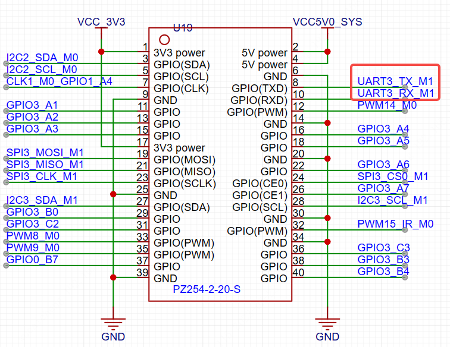
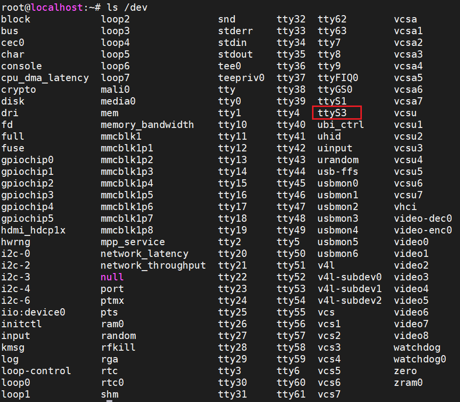

<!DOCTYPE lake>
<p data-lake-id="ub1dc1cf9" id="ub1dc1cf9"><span data-lake-id="u9a24ccc5" id="u9a24ccc5">    用户GPIO中其实很多IO口可以复用成串口功能（可查看复用定义表），但是我们这里按照默认定义所以只对8脚、9脚进行复用测试，引脚定义入下图：</span></p><p data-lake-id="ucdca26ae" id="ucdca26ae"><span data-lake-id="u3cfb1ffb" id="u3cfb1ffb">​</span><br/></p><p data-lake-id="u430989be" id="u430989be"></p><h2 data-lake-id="HtKUx" id="HtKUx"><span data-lake-id="u8ceef4a6" id="u8ceef4a6" style="color: rgb(51, 51, 51)">硬件连接</span></h2><p data-lake-id="u79d3f38e" id="u79d3f38e"><span class="lake-fontsize-12" data-lake-id="ud3ce6b07" id="ud3ce6b07" style="color: rgb(51, 51, 51)"> </span><span class="lake-fontsize-12" data-lake-id="u76f5db5c" id="u76f5db5c" style="color: rgb(51, 51, 51)">测试串口我们需要一个串口调试工具，可以使用串口烧录工具或者STC8核心板扮演这个角色，具体的接线方式参考下面的表格。</span></p><ul list="udd3f2364"><li data-lake-id="u4520877a" fid="ub87ee17c" id="u4520877a"><span class="lake-fontsize-12" data-lake-id="u05309b67" id="u05309b67" style="color: rgb(51, 51, 51)">串口烧录工具</span></li></ul><table class="lake-table" data-lake-id="lha2t" id="lha2t" margin="true" style="width: 750px"><colgroup><col width="250"/><col width="250"/><col width="250"/></colgroup><tbody><tr data-lake-id="ufa9de823" id="ufa9de823"><td data-lake-id="ua65e3cfe" id="ua65e3cfe"><p data-lake-id="u16f4fe06" id="u16f4fe06" style="text-align: left"><strong><span class="lake-fontsize-12" data-lake-id="u4e79a058" id="u4e79a058" style="color: rgb(51, 51, 51)">GPIO引脚编号</span></strong></p></td><td data-lake-id="u7ada4795" id="u7ada4795"><p data-lake-id="u8360f387" id="u8360f387" style="text-align: left"><strong><span class="lake-fontsize-12" data-lake-id="u71cfcd47" id="u71cfcd47" style="color: rgb(51, 51, 51)">GPIO引脚功能</span></strong></p></td><td data-lake-id="u8782eacb" id="u8782eacb"><p data-lake-id="uddc3a5bf" id="uddc3a5bf" style="text-align: left"><strong><span class="lake-fontsize-12" data-lake-id="ub019e70a" id="ub019e70a" style="color: rgb(51, 51, 51)">串口烧录工具</span></strong></p></td></tr><tr data-lake-id="ua3daad9e" id="ua3daad9e"><td data-lake-id="u0a9e7e5b" id="u0a9e7e5b"><p data-lake-id="u880f3141" id="u880f3141" style="text-align: left"><span class="lake-fontsize-12" data-lake-id="u41c9dcc2" id="u41c9dcc2" style="color: rgb(51, 51, 51)">8</span></p></td><td data-lake-id="u415f9017" id="u415f9017"><p data-lake-id="u52c5836d" id="u52c5836d" style="text-align: left"><span class="lake-fontsize-12" data-lake-id="u609fb7d7" id="u609fb7d7" style="color: rgb(51, 51, 51)">UART3_TX_M1</span></p></td><td data-lake-id="u982043a9" id="u982043a9"><p data-lake-id="u34055935" id="u34055935" style="text-align: left"><span class="lake-fontsize-12" data-lake-id="u7964493f" id="u7964493f" style="color: rgb(51, 51, 51)">RXD</span></p></td></tr><tr data-lake-id="uddec0b26" id="uddec0b26"><td data-lake-id="u1d12732b" id="u1d12732b" style="background-color: rgb(248, 248, 248)"><p data-lake-id="u7310048a" id="u7310048a" style="text-align: left"><span class="lake-fontsize-12" data-lake-id="u41b7408b" id="u41b7408b" style="color: rgb(51, 51, 51)">10</span></p></td><td data-lake-id="u094ec3a8" id="u094ec3a8" style="background-color: rgb(248, 248, 248)"><p data-lake-id="u26473f94" id="u26473f94" style="text-align: left"><span class="lake-fontsize-12" data-lake-id="u745eaa4f" id="u745eaa4f" style="color: rgb(51, 51, 51)">UART3_RX_M1</span></p></td><td data-lake-id="u7a6f7ba2" id="u7a6f7ba2" style="background-color: rgb(248, 248, 248)"><p data-lake-id="u5afc93d9" id="u5afc93d9" style="text-align: left"><span class="lake-fontsize-12" data-lake-id="u81532143" id="u81532143" style="color: rgb(51, 51, 51)">TXD</span></p></td></tr><tr data-lake-id="u49ccb8ce" id="u49ccb8ce"><td data-lake-id="u1721cea6" id="u1721cea6"><p data-lake-id="u428e400d" id="u428e400d" style="text-align: left"><span class="lake-fontsize-12" data-lake-id="u1f410629" id="u1f410629" style="color: rgb(51, 51, 51)">39</span></p></td><td data-lake-id="ue7a745d4" id="ue7a745d4"><p data-lake-id="u4f8cd5ee" id="u4f8cd5ee" style="text-align: left"><span class="lake-fontsize-12" data-lake-id="uafe890a0" id="uafe890a0" style="color: rgb(51, 51, 51)">GND</span></p></td><td data-lake-id="u62fd2f50" id="u62fd2f50"><p data-lake-id="uee42458e" id="uee42458e" style="text-align: left"><span class="lake-fontsize-12" data-lake-id="u20e19876" id="u20e19876" style="color: rgb(51, 51, 51)">GND</span></p></td></tr></tbody></table><ul list="u5d0526c7"><li data-lake-id="ub3aced59" fid="ub6b810f8" id="ub3aced59"><span class="lake-fontsize-12" data-lake-id="ue445ab84" id="ue445ab84" style="color: rgb(51, 51, 51)">STC8核心板</span></li></ul><table class="lake-table" data-lake-id="OFMOY" id="OFMOY" margin="true" style="width: 750px"><colgroup><col width="250"/><col width="250"/><col width="250"/></colgroup><tbody><tr data-lake-id="ub87d7ff5" id="ub87d7ff5"><td data-lake-id="u41466910" id="u41466910"><p data-lake-id="u7d665b82" id="u7d665b82" style="text-align: left"><strong><span class="lake-fontsize-12" data-lake-id="u1003cc11" id="u1003cc11" style="color: rgb(51, 51, 51)">GPIO引脚编号</span></strong></p></td><td data-lake-id="u843e10d1" id="u843e10d1"><p data-lake-id="uc96a5691" id="uc96a5691" style="text-align: left"><strong><span class="lake-fontsize-12" data-lake-id="u0adfa91d" id="u0adfa91d" style="color: rgb(51, 51, 51)">GPIO引脚功能</span></strong></p></td><td data-lake-id="u1704c63e" id="u1704c63e"><p data-lake-id="ue25437db" id="ue25437db" style="text-align: left"><strong><span class="lake-fontsize-12" data-lake-id="u84c1f061" id="u84c1f061" style="color: rgb(51, 51, 51)">STC8核心板</span></strong></p></td></tr><tr data-lake-id="u15a10e2e" id="u15a10e2e"><td data-lake-id="u53ab76c4" id="u53ab76c4"><p data-lake-id="u9871f786" id="u9871f786" style="text-align: left"><span class="lake-fontsize-12" data-lake-id="ud29cde32" id="ud29cde32" style="color: rgb(51, 51, 51)">8</span></p></td><td data-lake-id="u34425e81" id="u34425e81"><p data-lake-id="uef907cec" id="uef907cec" style="text-align: left"><span class="lake-fontsize-12" data-lake-id="ua57f9b51" id="ua57f9b51" style="color: rgb(51, 51, 51)">UART3_TX_M1</span></p></td><td data-lake-id="uc3de2736" id="uc3de2736"><p data-lake-id="u099370c9" id="u099370c9" style="text-align: left"><span class="lake-fontsize-12" data-lake-id="uce8d024c" id="uce8d024c" style="color: rgb(51, 51, 51)">P3.1</span></p></td></tr><tr data-lake-id="udae60041" id="udae60041"><td data-lake-id="u08837954" id="u08837954" style="background-color: rgb(248, 248, 248)"><p data-lake-id="ub5b1e25c" id="ub5b1e25c" style="text-align: left"><span class="lake-fontsize-12" data-lake-id="uca75e40d" id="uca75e40d" style="color: rgb(51, 51, 51)">10</span></p></td><td data-lake-id="ua11f5803" id="ua11f5803" style="background-color: rgb(248, 248, 248)"><p data-lake-id="uaa6c579c" id="uaa6c579c" style="text-align: left"><span class="lake-fontsize-12" data-lake-id="uaedab3a7" id="uaedab3a7" style="color: rgb(51, 51, 51)">UART3_RX_M1</span></p></td><td data-lake-id="udb9ee338" id="udb9ee338" style="background-color: rgb(248, 248, 248)"><p data-lake-id="u096ef9eb" id="u096ef9eb" style="text-align: left"><span class="lake-fontsize-12" data-lake-id="ube89581a" id="ube89581a" style="color: rgb(51, 51, 51)">P3.0</span></p></td></tr><tr data-lake-id="u79e9e06e" id="u79e9e06e"><td data-lake-id="u868d96a6" id="u868d96a6"><p data-lake-id="u5c003392" id="u5c003392" style="text-align: left"><span class="lake-fontsize-12" data-lake-id="u2fa09adc" id="u2fa09adc" style="color: rgb(51, 51, 51)">39</span></p></td><td data-lake-id="u936a8260" id="u936a8260"><p data-lake-id="uc86b5f34" id="uc86b5f34" style="text-align: left"><span class="lake-fontsize-12" data-lake-id="uffb94db0" id="uffb94db0" style="color: rgb(51, 51, 51)">GND</span></p></td><td data-lake-id="u17cd4ec7" id="u17cd4ec7"><p data-lake-id="ueea2cb05" id="ueea2cb05" style="text-align: left"><span class="lake-fontsize-12" data-lake-id="u734c92d2" id="u734c92d2" style="color: rgb(51, 51, 51)">GND</span></p></td></tr></tbody></table><h2 data-lake-id="jp6La" id="jp6La"><span data-lake-id="u46018f1b" id="u46018f1b" style="color: rgb(51, 51, 51)">串口测试</span></h2><p data-lake-id="ub01861d1" id="ub01861d1"><span class="lake-fontsize-12" data-lake-id="ub7b22338" id="ub7b22338" style="color: rgb(51, 51, 51)">通过设备管理器查看串口序号，然后通过</span><span class="lake-fontsize-12" data-lake-id="u0a120a06" id="u0a120a06" style="color: rgb(51, 51, 51); background-color: rgb(243, 244, 244)">stc-isp</span><span class="lake-fontsize-12" data-lake-id="u8317219a" id="u8317219a" style="color: rgb(51, 51, 51)"> 或者 </span><span class="lake-fontsize-12" data-lake-id="ufe302e24" id="ufe302e24" style="color: rgb(51, 51, 51); background-color: rgb(243, 244, 244)">sscom</span><span class="lake-fontsize-12" data-lake-id="u7bba14d9" id="u7bba14d9" style="color: rgb(51, 51, 51)"> 与泰山派进行串口通讯测试</span></p><ul list="u0b47ce1a"><li data-lake-id="ubc42b55a" fid="u399fef11" id="ubc42b55a"><span class="lake-fontsize-12" data-lake-id="u81bd6a3d" id="u81bd6a3d" style="color: rgb(51, 51, 51)">查看串口设备</span></li></ul><p data-lake-id="u35512f4b" id="u35512f4b"><span class="lake-fontsize-12" data-lake-id="u459c9a8c" id="u459c9a8c" style="color: rgb(119, 119, 119)">使用 </span><span class="lake-fontsize-12" data-lake-id="u656ba8fb" id="u656ba8fb" style="color: rgb(119, 119, 119); background-color: rgb(243, 244, 244)">ls /dev</span><span class="lake-fontsize-12" data-lake-id="u2cd20566" id="u2cd20566" style="color: rgb(119, 119, 119)"> 查看设备，其中罗列出来的ttyS3即是串口设备。</span></p><p data-lake-id="ub888779e" id="ub888779e"></p><p data-lake-id="uf406e5ba" id="uf406e5ba"><br/></p><ul list="u17e784f0"><li data-lake-id="u712b3eb4" fid="u1e0a0f61" id="u712b3eb4"><span class="lake-fontsize-12" data-lake-id="u3eca09f6" id="u3eca09f6" style="color: rgb(51, 51, 51)">开始测试前需要设置ttyS3的串口参数，这里要与串口工具设置一致才能进行通讯，否则会出现乱码或者无法显示等异常情况，具体命令如下：</span></li></ul><span class="yuque-card-unsupported">[codeblock]</span><p data-lake-id="uf87d446f" id="uf87d446f"><br/></p><ul list="u75cb1327"><li data-lake-id="uf959c325" fid="uf3c36c48" id="uf959c325"><span class="lake-fontsize-12" data-lake-id="ub64cb5d2" id="ub64cb5d2" style="color: rgb(51, 51, 51)">设置ttyS3串口参数，其他都保持默认，只要设置波特率就行</span></li></ul><span class="yuque-card-unsupported">[codeblock]</span><p data-lake-id="ue5d7e5a3" id="ue5d7e5a3"><span class="lake-fontsize-12" data-lake-id="u23b88ed9" id="u23b88ed9" style="color: rgb(51, 51, 51)">​</span><br/></p><ul list="u291a7a0f"><li data-lake-id="ue6e8e348" fid="uc8dc8978" id="ue6e8e348"><span class="lake-fontsize-12" data-lake-id="ua1129592" id="ua1129592" style="color: rgb(51, 51, 51)">发送数据到 </span><span class="lake-fontsize-12" data-lake-id="ubdc920e1" id="ubdc920e1" style="color: rgb(51, 51, 51); background-color: rgb(243, 244, 244)">ttyS3</span></li></ul><p data-lake-id="ub6f60d53" id="ub6f60d53"><span class="lake-fontsize-12" data-lake-id="uc936663a" id="uc936663a" style="color: rgb(119, 119, 119)">要想从泰山派通过串口发送数据到windows，只需要把数据写入到 </span><span class="lake-fontsize-12" data-lake-id="u08d66f3b" id="u08d66f3b" style="color: rgb(119, 119, 119); background-color: rgb(243, 244, 244)">ttyS3</span><span class="lake-fontsize-12" data-lake-id="u8ab8a974" id="u8ab8a974" style="color: rgb(119, 119, 119)">即可</span></p><span class="yuque-card-unsupported">[codeblock]</span><p data-lake-id="ub19811fe" id="ub19811fe"><span data-lake-id="u7824d6bc" id="u7824d6bc">​</span><br/></p><ul list="u8b8c7bbe"><li data-lake-id="u120adb6a" fid="ub46f7afd" id="u120adb6a"><span class="lake-fontsize-12" data-lake-id="u66f1df56" id="u66f1df56" style="color: rgb(51, 51, 51)">接收 </span><span class="lake-fontsize-12" data-lake-id="ue504edc4" id="ue504edc4" style="color: rgb(51, 51, 51); background-color: rgb(243, 244, 244)">ttyS3</span><span class="lake-fontsize-12" data-lake-id="u7fc2b4be" id="u7fc2b4be" style="color: rgb(51, 51, 51)"> 收到的数据</span></li></ul><p data-lake-id="u8ac48743" id="u8ac48743"><span class="lake-fontsize-12" data-lake-id="u0049347a" id="u0049347a" style="color: rgb(119, 119, 119)">从windows的串口助手发数据给泰山派，只需要查看 </span><span class="lake-fontsize-12" data-lake-id="ua8015cb6" id="ua8015cb6" style="color: rgb(119, 119, 119); background-color: rgb(243, 244, 244)">ttyS3</span><span class="lake-fontsize-12" data-lake-id="u60901dc5" id="u60901dc5" style="color: rgb(119, 119, 119)">的内容即可</span></p><span class="yuque-card-unsupported">[codeblock]</span><p data-lake-id="u3252f267" id="u3252f267"><span class="lake-fontsize-12" data-lake-id="ue67811b9" id="ue67811b9">发送数据端要记得追加回车换行符 </span><code data-lake-id="u74ec72b9" id="u74ec72b9"><span class="lake-fontsize-12" data-lake-id="u0bc67045" id="u0bc67045">\r\n</span></code><span class="lake-fontsize-12" data-lake-id="u96821177" id="u96821177">，否则接收者不能打印</span></p>